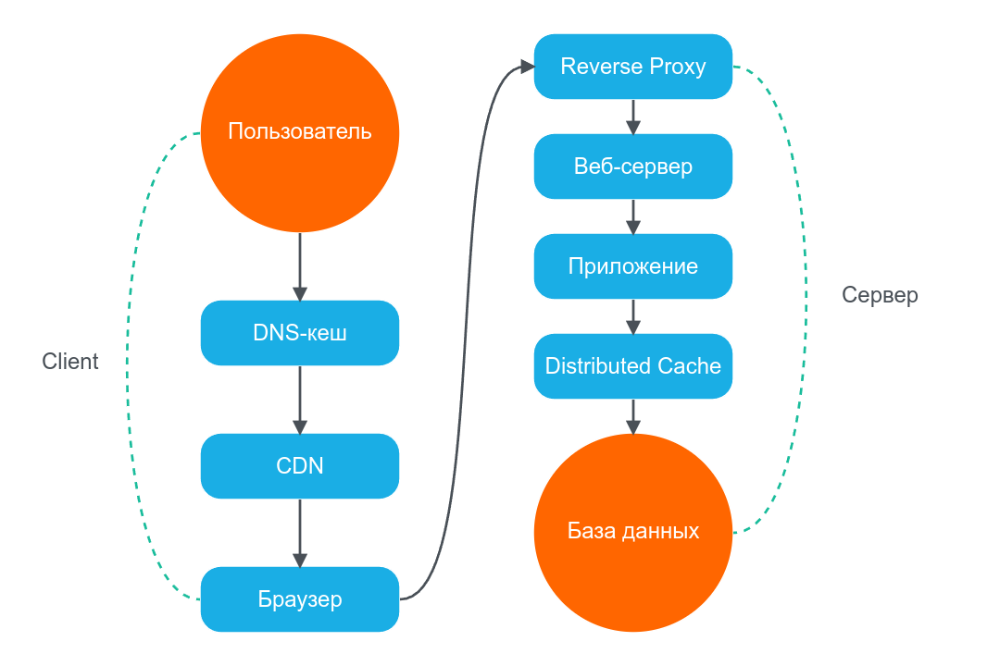

Что такое кеширование

Кочетов Даниил



ipconfig /flushdnssudo killall -HUP mDNSRespondersudo systemd-resolve --flush-caches
curl -X POST "https://api.cloudflare.com/client/v4/zones/{zone_id}/purge_cache"style.css?v=1.2.3
Ctrl+Shift+Delete (универсальное сочетание)Ctrl+F5 (жёсткое обновление страницы)rm -rf /path/to/nginx/cache/*curl -X PURGE http://site.com/page
location ~* \.(jpg|jpeg|png|gif|ico|css|js|woff2?|ttf|svg)$ {
expires 30d;
add_header Cache-Control "public, max-age=2592000";
add_header Vary Accept-Encoding;
}
# Настройка зоны кеширования
proxy_cache_path /data/nginx/cache
levels=1:2
keys_zone=my_cache:100m
max_size=10g
inactive=60m;
location / {
proxy_pass http://backend;
proxy_cache my_cache;
proxy_cache_valid 200 302 10m;
proxy_cache_valid 404 1m;
add_header X-Proxy-Cache $upstream_cache_status;
}
rm -rf /data/nginx/cache/*curl -X PURGE http://site.com/pagerm -rf /bitrix/cache/* && rm -rf /bitrix/managed_cache/*
$cache = \Bitrix\Main\Data\Cache::createInstance();
if ($cache->initCache(3600, 'catalog_data', '/catalog/')) {
$data = $cache->getVars();
} elseif ($cache->startDataCache()) {
$data = getCatalogData();
$cache->endDataCache($data);
}
$cache = \Bitrix\Main\Data\Cache::createInstance();
if ($cache->startDataCache(3600, 'catalog_items_5', '/catalog/', ['iblock_id_5'])) {
$items = \CIBlockElement::GetList([], ['IBLOCK_ID' => 5]);
$cache->endDataCache($items);
} else {
$items = $cache->getVars();
}
// Инвалидация
\Bitrix\Main\Data\TaggedCache::clearByTag('iblock_id_5');
// Управляемый кеш
$GLOBALS["CACHE_MANAGER"]->CleanAll();
$GLOBALS["stackCacheManager"]->CleanAll();
// Кеш меню
$GLOBALS["CACHE_MANAGER"]->CleanDir("menu");
CBitrixComponent::clearComponentCache("bitrix:menu");
// Html кеш
$page = \Bitrix\Main\Composite\Page::getInstance();
$page->deleteAll();
// по ключу
$cache = \Bitrix\Main\Data\Cache::createInstance();
$cache->clean($uniqueString, $initDir);
// По директории
$cache = \Bitrix\Main\Data\Cache::createInstance();
$cache->cleanDir($initDir);
// По тегу
$taggedCache = \Bitrix\Main\Application::getInstance()->getTaggedCache();
$taggedCache->clearByTag('iblock_id_2');
// Все теги
$taggedCache = \Bitrix\Main\Application::getInstance()->getTaggedCache();
$taggedCache->deleteAllTags();
// Для элементов инфоблока
\Bitrix\Iblock\ElementTable::getEntity()->cleanCache();
// Для любой ORM сущности
$entity::getEntity()->cleanCache();
php bin/console cache:clearphp bin/console cache:pool:clear app.cacherm -rf var/cache/prod/*
$cache->get('products_list', function (ItemInterface $item) {
$item->tag(['products', 'category_5']);
return $this->fetchProducts();
});
// Инвалидация:
$cache->invalidateTags(['category_5']);
revalidateTag('users')revalidatePath('/dashboard')router.refresh() (клиент)
async function getData() {
const res = await fetch('https://api.example.com/data')
return res.json()
}
// В одном рендере:
const data1 = await getData() // запрос отправляется
const data2 = await getData() // берётся из кеша (HIT)
// Кешировать ответ (по умолчанию в Next.js 14)
fetch('https://...', { cache: 'force-cache' })
// Не кешировать (по умолчанию в Next.js 15)
fetch('https://...', { cache: 'no-store' })
// Кешировать с ревалидацией каждые 60 секунд
fetch('https://...', { next: { revalidate: 60 } })
// С тегами для групповой инвалидации
fetch('https://...', { next: { tags: ['users'] } })
import { revalidateTag, revalidatePath } from 'next/cache'
revalidateTag('users')
revalidatePath('/dashboard')
// API Route пример
export async function POST() {
await updateUser()
revalidateTag('users')
return Response.json({ success: true })
}
// layout.tsx или page.tsx
'use cache'
export default async function Page() {
const users = await fetch('/api/users').then(r => r.json())
return {users.map(u => {u.name}
)}
}
'use client'
import { useRouter } from 'next/navigation'
export function RefreshButton() {
const router = useRouter()
return <button onClick={() => router.refresh()}>Обновить</button>
}
# Очистка всего кеша
redis-cli FLUSHALL
# Очистка конкретной базы
redis-cli FLUSHDB
# Удаление по паттерну
redis-cli --scan --pattern "user:*" | xargs redis-cli DEL
# Очистка по тегам (в приложении)
redis-cli DEL tag:users tag:products
# Очистка всего кеша
echo "flush_all" | nc localhost 11211
# Через telnet
telnet localhost 11211
flush_all
quit
# В PHP
$memcached = new Memcached();
$memcached->flush();